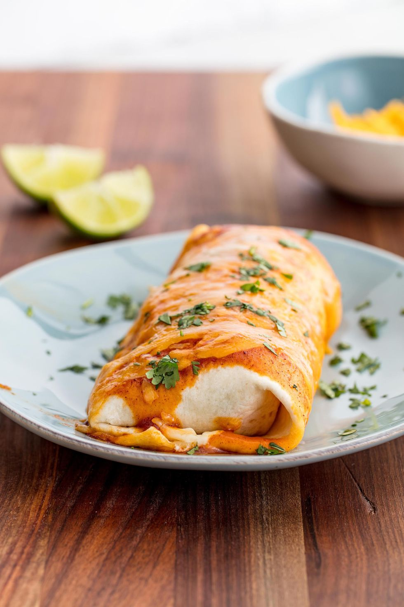

Burrito

Ingredients
- 1 tbsp. extra-virgin olive oil
- 1 onion, chopped
- 2 garlic cloves, minced
- 2 c. shredded rotisserie chicken
- 1 c. enchilada sauce
- Juice of 1 lime
- kosher salt
- Freshly ground black pepper
- can black beans, drained
- 2 c. cooked white rice
- 1 c. cheddar cheese, divided
- 1 c. Monterey Jack cheese
- 6 large flour tortillas
- Sour cream, for serving (optional)
- Hot sauce, for serving (optional)
- Chopped cilantro, for serving (optional)
Preparation
- Preheat oven to 350 degrees F.
-
Heat olive oil in a large nonstick skillet over medium heat. Add onion
and sauté until soft. Stir in garlic and cook until fragrant, about 30
seconds. Add chicken and about 1/2 cup enchilada sauce, or until the
chicken is fully coated. Toss until evenly combined. Stir in lime juice
and season with salt and pepper to taste.
-
Working one burrito at a time, lay a tortilla on a cutting board or
clean working service. Add a scoopful each of rice and beans to the
center. Add the chicken mixture then top with a small handful each of
both cheeses. Reserve about ½ cup of cheese total to sprinkle on the
burritos before baking. Roll the burrito tightly and place in a large
casserole dish. Repeat with remaining tortillas.
-
Pour the remaining enchilada sauce over the burritos then sprinkle the
extra cheeses on top. Cover until the cheese is melted, about 15
minutes.
-
Garnish with cilantro and serve with sour cream and hot sauce, if
desired.